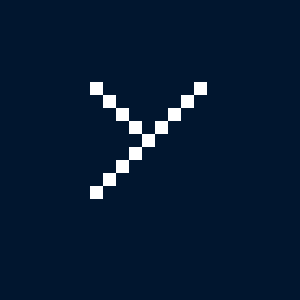

Here, there are bookmarklets - basically extensions in the form of a bookmark!
Just drag the links to your bookmark bar to install them, and click on the bookmark(s) to use them!
Disguise tabs as Aeries
Flip a page upside down